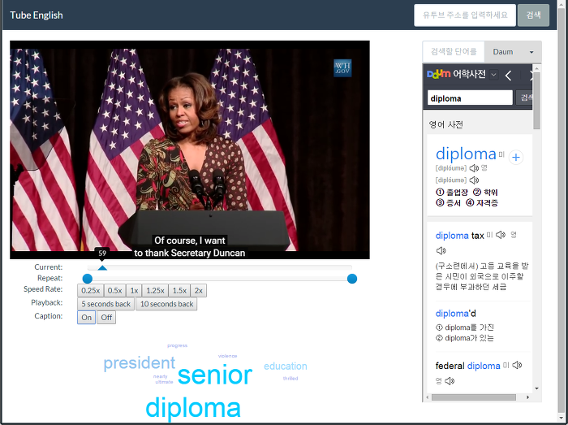

TubeEnglish 를 소개합니다
Google Hackfair 에 내려고 만들었는데, 안타깝게도 전시회에는 못 나가게 되었음 ㅠㅜ 마무리하는 의미로 블로그에 소개글 남겨본다.
메인 주제는 YouTube 를 통한 영어 공부를 할 때 도움이 되는 웹앱이다.

다음과 같은 기능이 있다.
* 구간 반복
* 속도 조절
* 5초/10초 앞으로 가기
* 자막 켜고 끄기
* 사전 연동
소개 동영상 주소는 https://www.youtube.com/watch?v=_UVfek-zRqE 이다.
홈페이지 주소는 http://tube-english.appspot.com/ 이다. 여기서 검색 창에 YouTube 주소를 붙여넣고 검색하면 위의 화면처럼 로딩되면서 앞의 기능들을 사용할 수 있다. 크롬 웹브라우저에서는 [플러그인] 을 설치하면 YouTube 에서 동영상을 보다가 원클릭에 갈 수 있다.
오픈소스이며 주소는 https://github.com/zelon/youtube-english 이다. 개발 환경은 golang + appengine, javascript, bootstrap, chrome extension 이다.
나름 열심히 준비했는데, 아이디어가 조금 부족했던 것 같다. 나름 요긴하게 쓰는 사이트가 되겠지만 말이다. 아쉽지만, 다음을 기약하며 관련 지식을 좀 더 습득했는 걸로 만족하자.
끝.